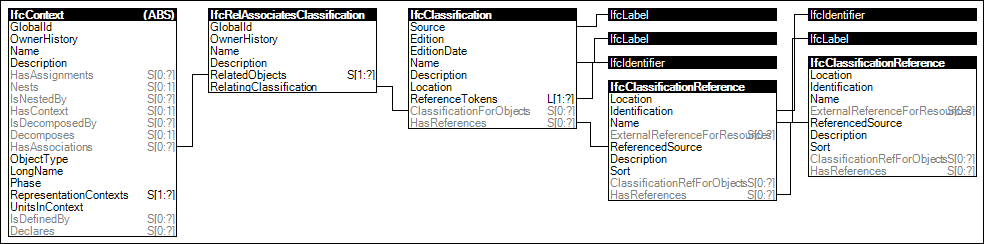

Link to this page
Link to this pageProjects may define classification structures, which may be used to classify objects contained within the same project, or other referencing projects (incorporating the current project as IfcProjectLibrary).
Figure 6 illustrates an instance diagram.
 |
Figure 6 — Project Classification Information |